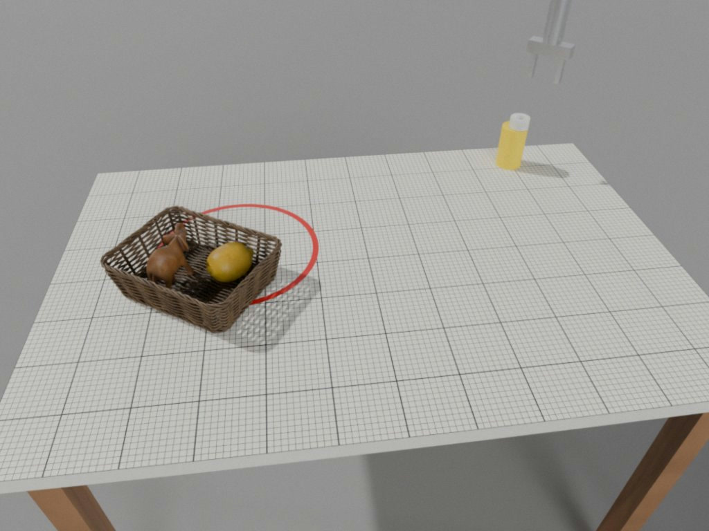
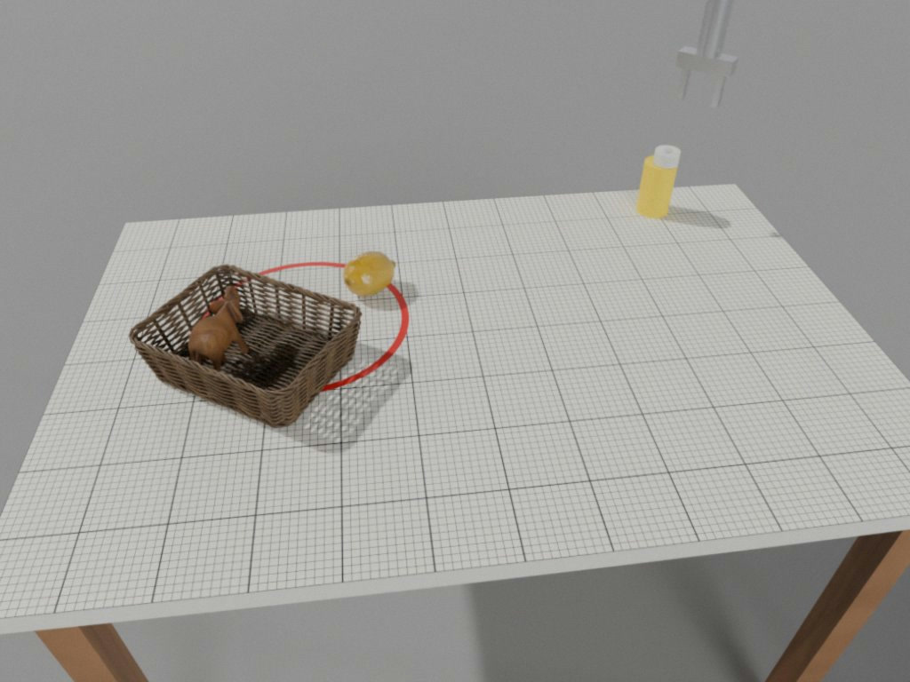

Counterfactual twin · gate G6 · frozen dataset v1
Move one object and re-render: the true answer flips. Opus 5.5 keeps the old one.
Question (front camera):
“Would the tape fit on the table in the gap between the basket and the lemon?”

Before · lemon in the basket
True answer
no
Opus 5.5 · high
no
✓

After · lemon moved onto the table
True answer
yes
Opus 5.5 · high
no
the old answer
✕
→